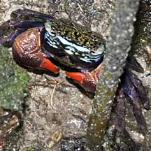
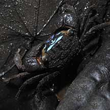
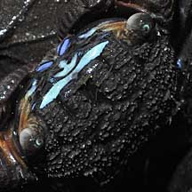
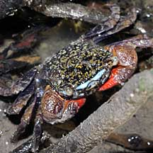
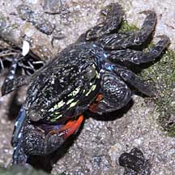
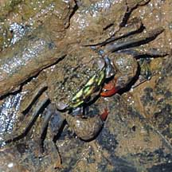

|
|
| crabs text index | photo index |
| Phylum Arthropoda > Subphylum Crustacea > Class Malacostraca > Order Decapoda > Brachyurans > Family Sesarmidae |
| Face-banded
sesarmine crab Perisesarma sp. Family Sesarmidae updated Dec 2025 Where seen? This small crab with a bright green or blue band between the eyes are commonly seen in some of our mangroves. It was previously known as Chiromantes sp. Features: Body width 2-3cm. Body flat and squarish, legs flat with pointed tips. Pincers deep red. Irridescent blue or green band between the eyes, across the face. A study found that the band's concave shape focuses reflected light to enhance brightness, much like the reflective surface behind car headlights. No matter what angle the source light comes from, the crab’s band reflects light most intensely at the eye level of other face-banded crabs to optimise signalling, or conveying information about itself. Two species commonly seen in our mangroves are Perisesarma eumolpe with a dark upside down V-shape under the face-band and Perisesarma indiarum with a bright upside-down V-shape under the face-band. |
 Kranji Nature Trail, Apr 10 |
 Perisesarma indiarum Pulau Semakau, Mar 09 |
 Bright upside-down V-shape under the face-band. |
| A study of these two species found that males of both species had more intense blue facial bands, whereas green was more pronounced in female facial bands. These colour differences may play a role in sexual recognition within the species. Bigger females had more intense blue in their facial bands, suggesting that s indicates of their maturity (and possibly body condition). In large males, facial band colours contrast strongly against the surrounding mudflat and may play an important role in signalling to other males during territorial disputes or competition for females. |
|
 Pasir Ris, Jun 10 |
 Kranji Nature Trail, Dec 10 |
 Chek Jawa, Dec 09 |
| These Perisesarma crabs eat sediment, leaves of various mangrove
trees, green algae and small invertebrates. The study suggests pigments
from their food may contribute to their colouration and thus could
be an honest signal of an individual's foraging ability, age or state
of health. Indeed, their study found the bands turned grey or black
when the crabs are dead. Females with eggs also had duller bands. Another study found both P. eumolpe and P. indiarum are mainly sediment grazers, but also feed on mangrove leaves and roots and occasionally animals. Both crab species prefer Avicennia alba leaves to other, locally common, mangrove species, i.e., A. officinalis, A. rumphiana, Rhizophora apiculata, Bruguiera gymnorhiza. There is, however, no significant preference for leaves of differing ages in the two species; and no difference in amount of fresh leaves eaten by the two crab species. The genus Perisesarma comprises one of the highest biomasses of mangrove crabs and play an important ecological role. As they feed on mangrove leaves, they recycle nutrients in the mangrove forest. Quickly breaking down the leaves for others in the food chain to eat, e.g., animals that eat the fragments left over by the crabs, what comes out of the crab after it eats the leaves, and of course, the crab itself! |
| Face-banded sesarmine crabs on Singapore shores |
On wildsingapore
flickr
|
Links
|